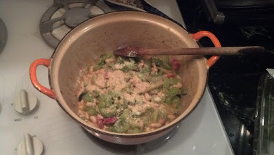

DT Smoosh (AKA Doomsday Smoosh)

Ingredients
- Celery
- Yellow Onion
- Black Olives
- Radish
- Chickpeas
- Anchovies
- Parmesan Cheese
- Packaged Breadcrumbs
- Cooking Oil
Directions
- Dice your celery, onion, olives, and radish.
- Oil a pan and heat it on medium high heat.
- Add your diced vegetables and chickpeas to the pan and cook until soft, 10-15 minutes.
- Remove pan from heat.
- Top with desired amounts of anchovies, parmesan cheese, and breadcrumbs.
- Mix together into a pastey mush, otherwise known as a "smoosh".
Enjoy!